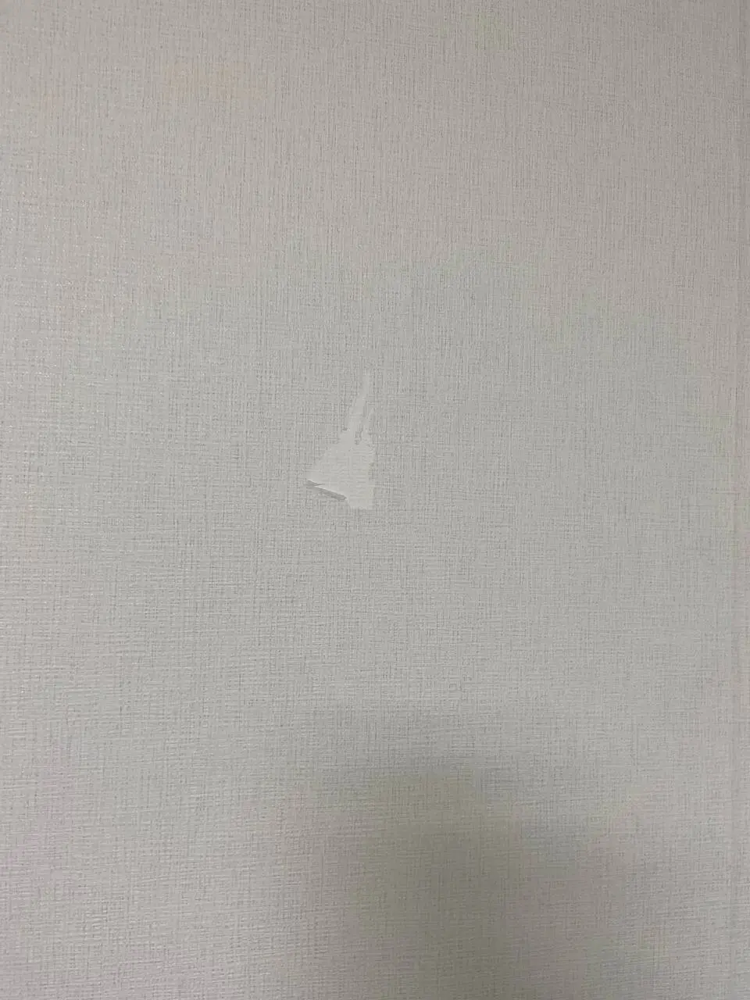
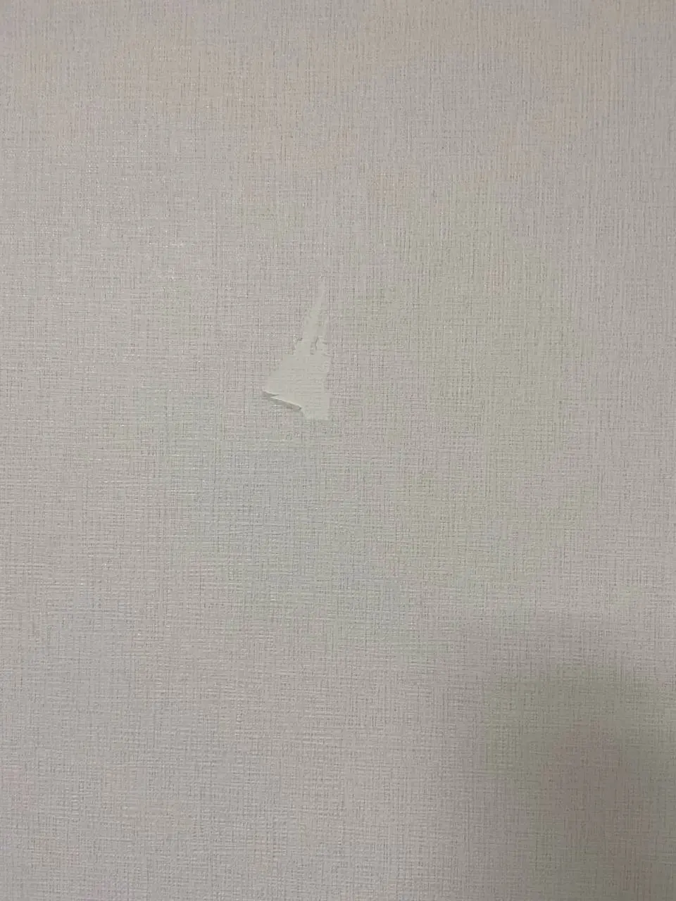
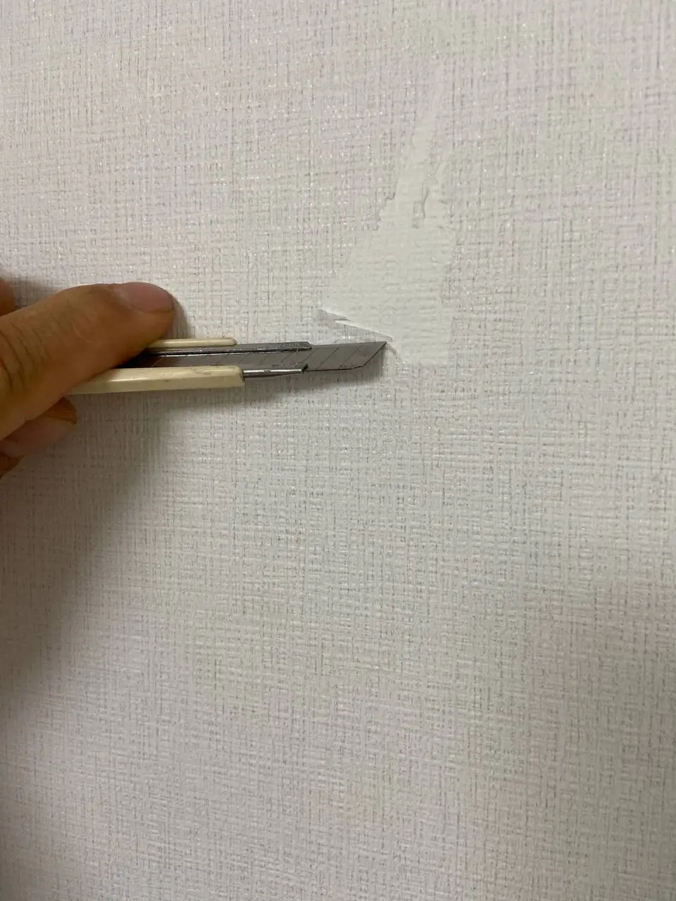
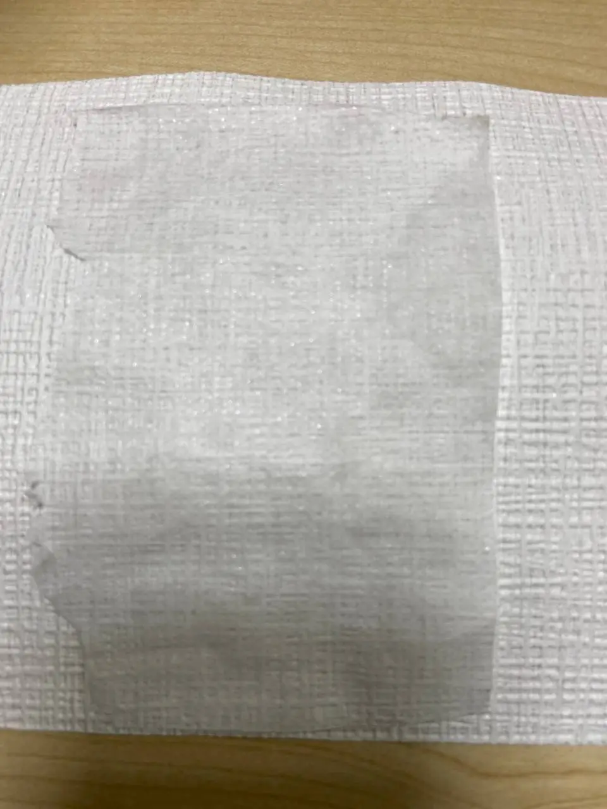
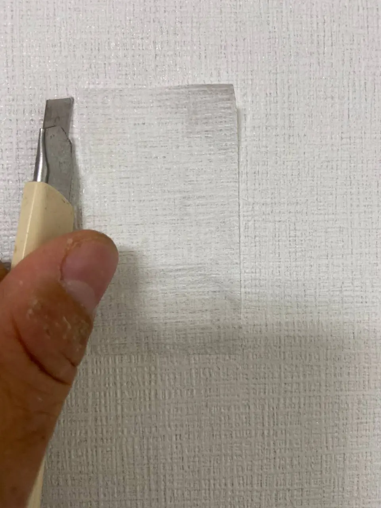
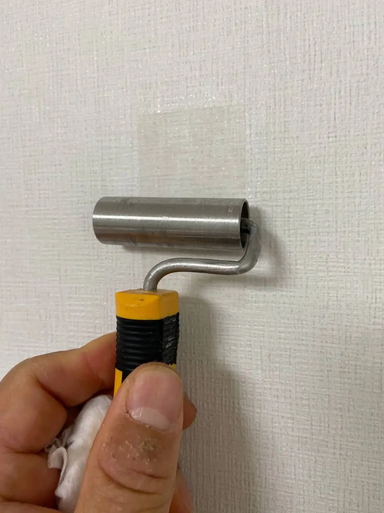
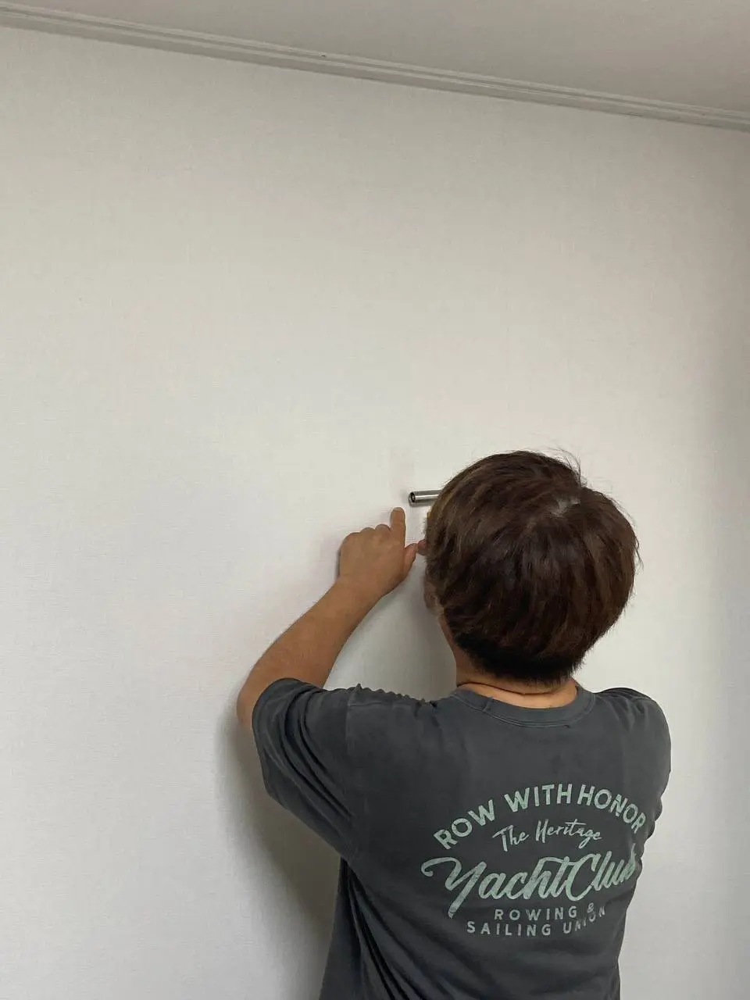
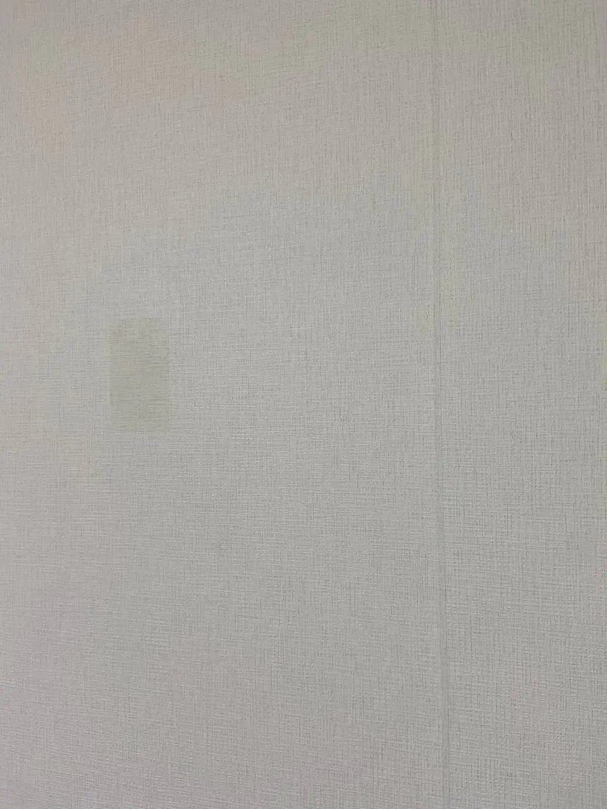
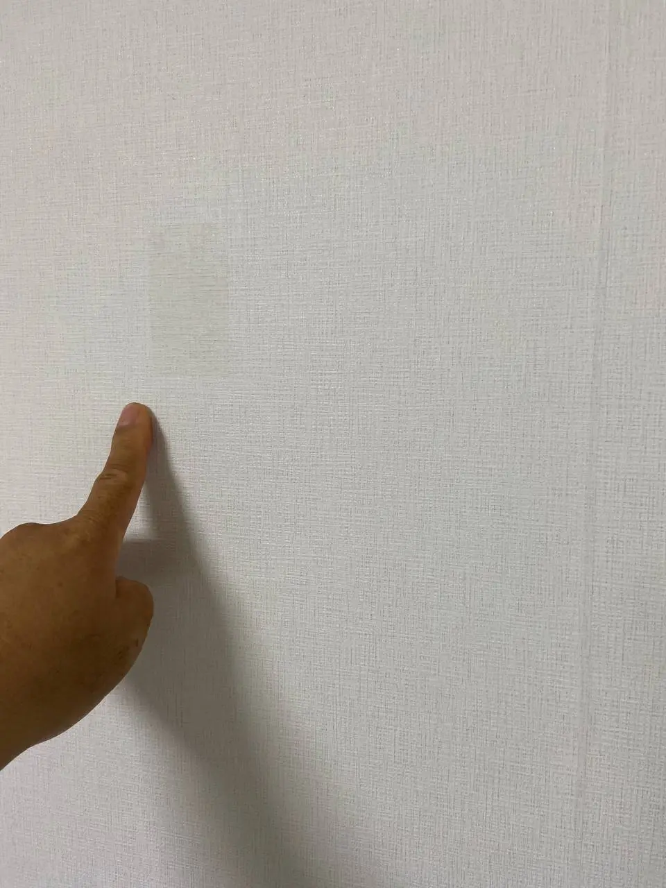
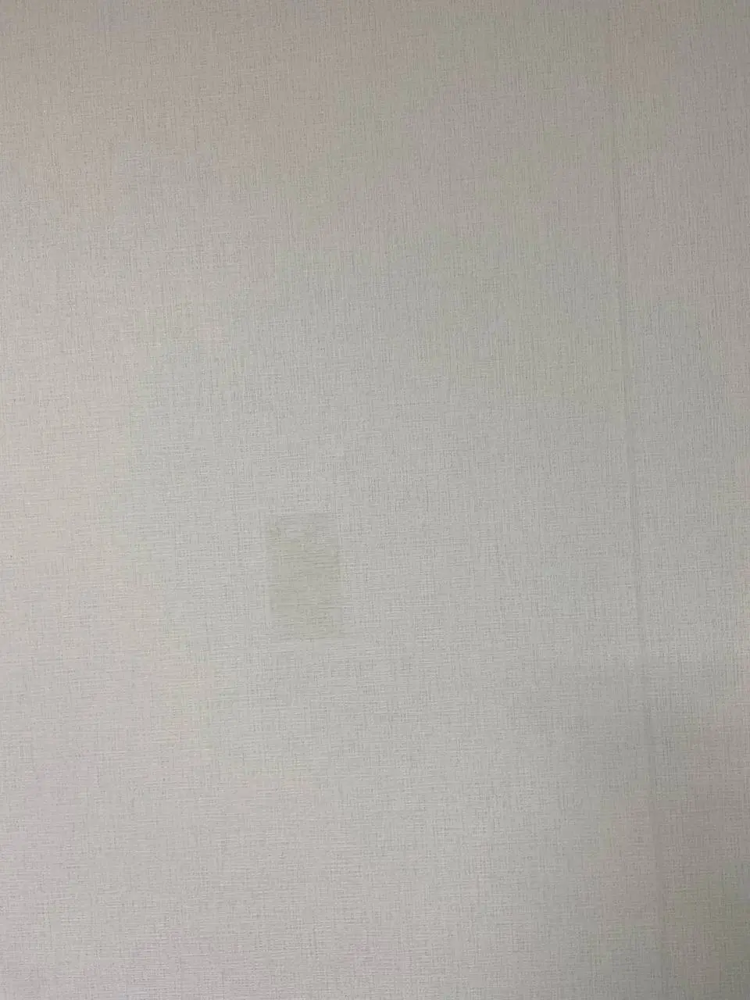

수원 장안구 벽지 복원 현장 수원 장안구에서 이삿짐을 옮기는 과정 중 벽지가 찢어진 현장입니다. 작은 찢김도 먼저 확인해야 하는 이유 가구나 짐을 옮기다 보면 모서리 부분이 벽에 닿으면서 벽지가 들뜨거나 찢어지는 경우가 있습니다. 작은 손상처럼 보여도 그대로 두면 찢어진 면이 더 벌어지거나, 조명 아래에서 손상 부위가 계...
이번 작업의 확인 포인트
손상 크기와 벽지 무늬, 들뜬 범위를 확인하고 주변 손상을 넓히지 않도록 정리한 뒤 표면 결을 맞춰 마감합니다.











수원 장안구 벽지 복원 현장
수원 장안구에서 이삿짐을 옮기는 과정 중 벽지가 찢어진 현장입니다.
작은 찢김도 먼저 확인해야 하는 이유
가구나 짐을 옮기다 보면 모서리 부분이 벽에 닿으면서 벽지가 들뜨거나 찢어지는 경우가 있습니다. 작은 손상처럼 보여도 그대로 두면 찢어진 면이 더 벌어지거나, 조명 아래에서 손상 부위가 계속 눈에 띌 수 있습니다.
손상 범위를 줄인 부분 복원 과정
이번 현장은 찢어진 벽지 주변을 먼저 정리한 뒤, 들뜬 부분을 안정적으로 붙이고 표면 결을 맞추는 방식으로 복원했습니다. 손상 부위를 무리하게 크게 넓히지 않고, 기존 벽지와 최대한 자연스럽게 이어 보이도록 마감했습니다.
전체 도배 전에 살펴볼 기준
벽지 복원은 새 벽지를 넓게 덧대는 방식만이 답은 아닙니다. 손상 크기와 벽지 패턴, 오염 정도를 보고 부분 복원이 가능한지 판단하는 것이 먼저입니다.
사진 상담 시 준비해 주세요
세븐홈케어는 생활 중 생긴 작은 손상도 현장 상태에 맞춰 처리합니다. 이사 중 생긴 찢김, 찍힘, 벽지 들뜸 같은 보수가 필요하시면 사진을 보내주시면 확인 후 안내드리겠습니다.
벽지는 같은 흰색처럼 보여도 제조 시기와 무늬, 빛 반사에 따라 차이가 날 수 있어 손상 부위와 주변 면을 함께 보는 것이 중요합니다.
사진 상담 시에는 손상 부위 근접 사진, 벽 전체가 보이는 사진, 자연광이나 조명을 켠 상태의 사진을 보내주세요. 여분 벽지 보유 여부도 알려주시면 부분 복원 가능성을 판단하는 데 도움이 됩니다.